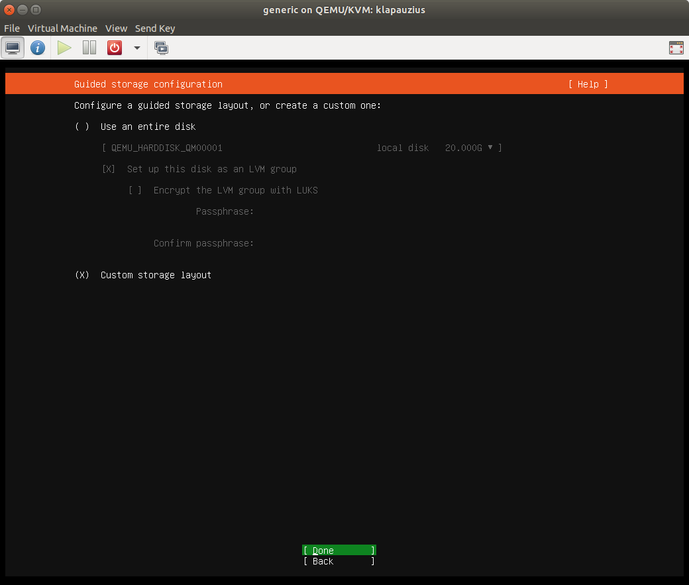
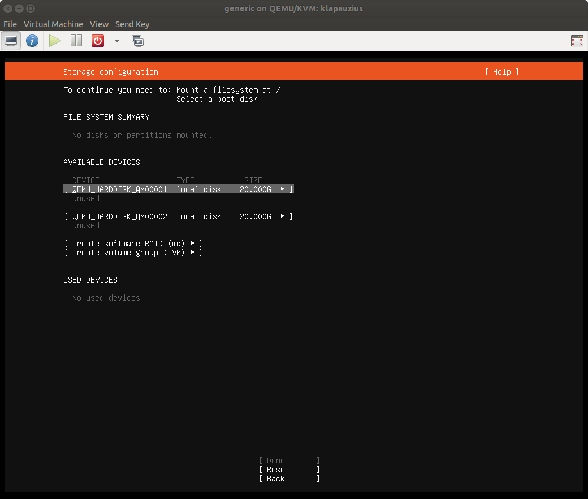
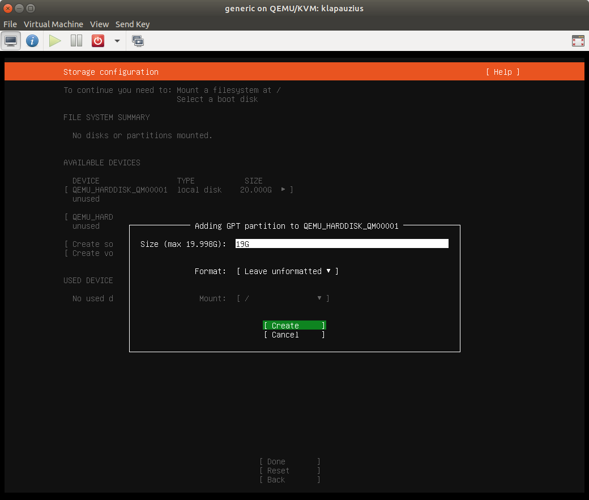
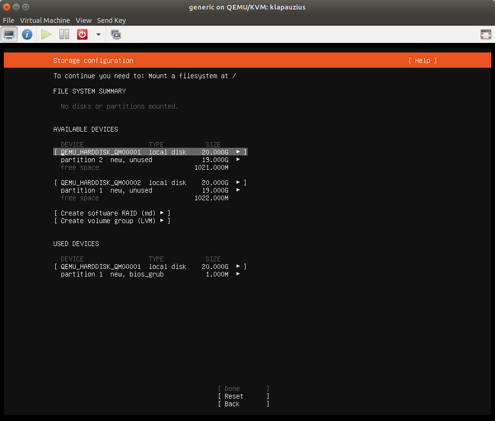
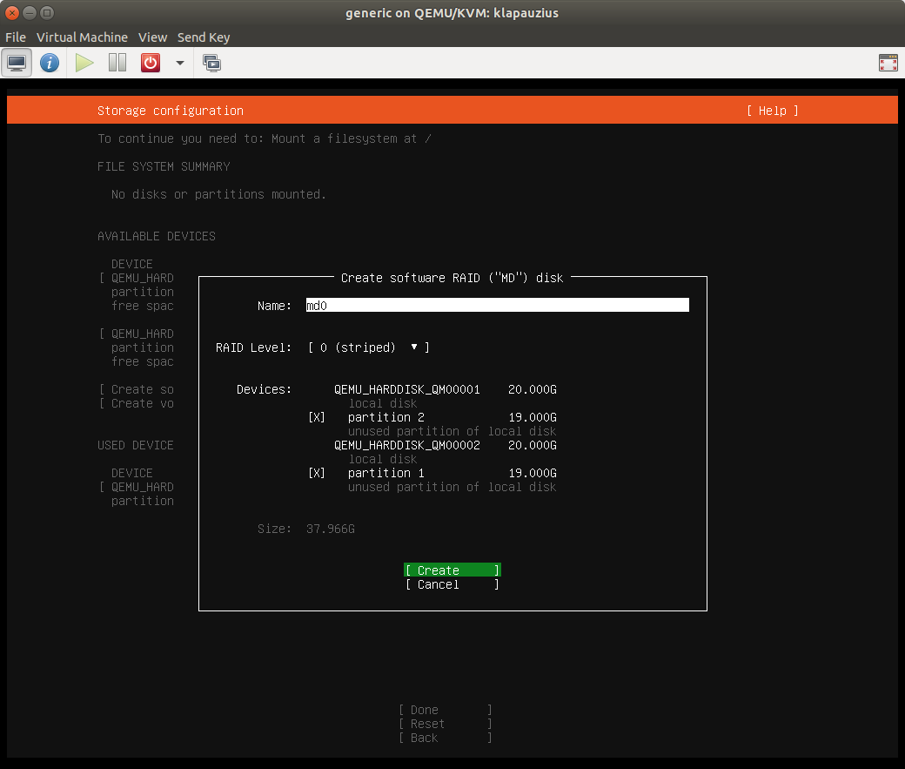
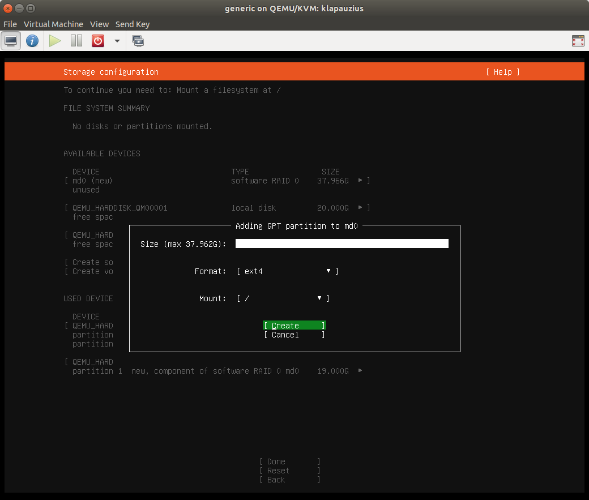
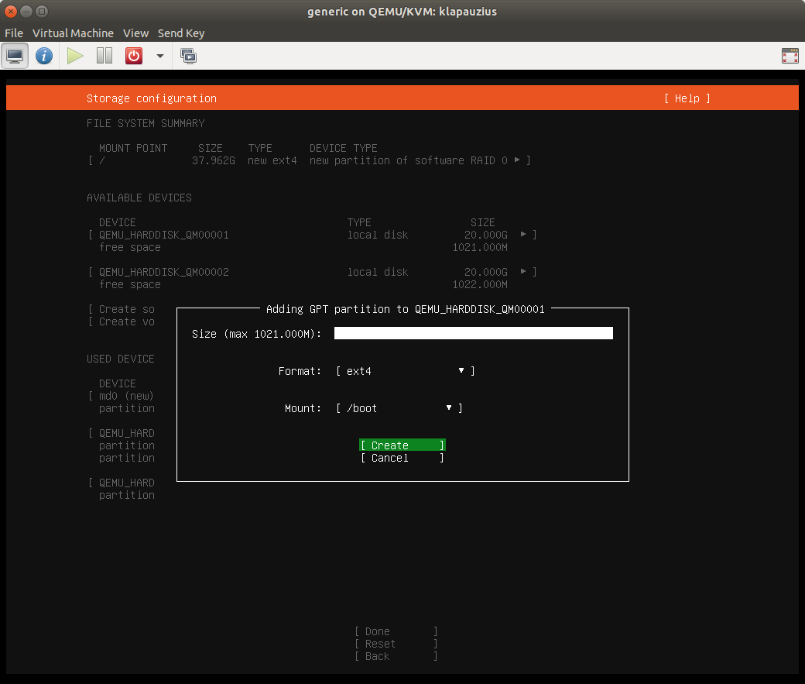
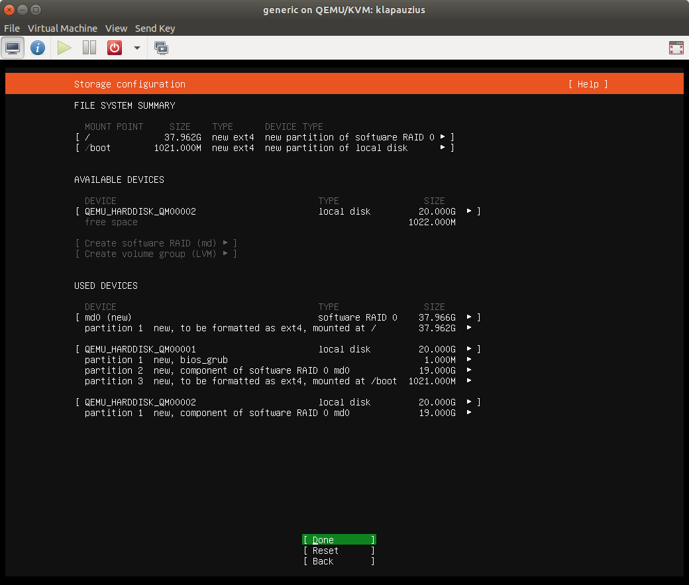
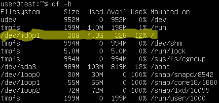

Installation von Ubuntu 20.04 auf Raid-0

Ich habe nach der erfolgreichen Arbeit an meinem PXE-Bootserver weitere Experimente folgen lassen - unter anderem habe ich für Debian als weitere Install-Option hinzugefügt. Weiterhin bietet der Server jetzt für Debian und Ubuntu 20.04 Automatik-Installationen an, die mit minimaler Nutzerinteraktion (Hostname und Passwort) auskommen
Im Zuge der Tests dieser neuen Erweiterungen und der Idee des Recyclings alter PC-Komponenten wollte ich mich dem Thema des Bootens von Ubuntu von einem Raid-0-Verbund widmen. In der letzten LTS-Version von Ubuntu musste man dazu den Alternate-Installer bemühen, der aber in dieser Form für Ubuntu 20.04 nicht mehr angeboten wird.
Bereits damals war es so, dass eine Desktop-Installation auf einem Raid-Array für die Desktop-Umgebung im graphischen Installer nicht angeboten wurde. Man konnte sich damals damit behelfen, eine Installation einer Kommandozeilen-Umgebung über den Alternate-Installer vorzunehmen und anschließend zu einer Desktop-Installation aufzuwerten, indem man die Kommandos
sudo apt-gt update
und
sudo apt install ubuntu-desktop
ausführte.
Bei mir kam die Motivation daher, dass ich wie gesagt einige Komponenten recyclen wollte, die bei mir lagerten - darunter waren auch ganz spezielle Festplatten aus einer anderen Zeit: die Festplatte Seagate Barracuda 7200.10 ST3160815AS hab es damals in einer Variante halber Bauhöhe: Der Hersteller hatte einfach weniger Magnetplatten im Laufwerk verbaut - das zählte damals als green-IT... Dadurch waren die Platten auch nur noch halb so schnell. Mit Raid-0 erreicht man einen höheren Durchsatz und ich dachte, dass ich damit versuchen könnte, diese Platten (ich habe 2 Stück) mit akzeptabler Geschwindigkeit weiter verwenden zu können...
Daher versuchte ich die Erfahrungen aus Ubuntu 18.04 auf den Live-Server-Installer der aktuellen LTS-Version 20.04 anzuwenden. Dazu wird zunächst erst einmal der ganz normale Installationsvorgang gestartet. Nun werden alle Fragen wie gehabt beantwortet bis man bei der Frage nach dem Ziel-Datenträger der Installation ankommt (Ich habe die Installation in einer KVM-Session dokumentiert, der ich zu diesem Zweck 2 virtuelle 20 GB-Festplatten spendiert hatte). Hier wählt man dann Custom storage layout:

BildbeschreibungAn dieser Stelle die obligatorische Warnung, nochmals in sich zu gehen und zu erforschen, ob man die Daten auf den angeschlossenen Datenträgern wirklich nicht mehr benötigt!
Auf dem nächsten Bildschirm sieht man dann alle gefundenen Platten - sind sie fabrikneu, kann man sofort loslegen. Falls nicht, ist zunächst für jede Platte (nicht Partition!) Reformat zu wählen, um die bereits vorhandenen Partitionen zu entfernen:

Start mit unformatierten DatenträgernAnschließend beginnt man mit dem Anlegen der Partitionen, aus denen später das Raid gebaut werden soll. In meinem Beispiel nehme ich als Größe 19 Gb. Wichtig ist hier als Format Leave unformatted zu verwenden:

Partitionen für Raid-0-Verbund erstellenDas muss auf allen Festplatten gechehen, die zum Raid-Verbund gehören sollen - bei mir also auf den beiden virtuellen Festplatten. Es darf nicht der gesamte Platz benutzt werden, weil eine extra boot-Partition benötigt wird: im Bootprozess weiß Ubuntu noch nichts von Raid und könnte entsprechende Partitionen nicht benutzen!
Vor der Erstellung des Raid sieht die Festplattenkonfiguration also so aus:

Festplattenkonfiguration vor Raid-ErstellungNun wählt man Create software raid (md) aus und erstellt einen Raid-0-Verbund wie folgt:

Raid-0-Verbund erstellenDiesen muss man nun noch formatieren und einem Mount-Point zuweisen (in unserem Fall ist das /):

Partition auf Raid-0 für /Jetzt fehlt nur noch die boot-Partition, die wir auf der ersten Platte im bisher ungenutzten Bereich anlegen:

boot-Partition anlegenDamit ist die Konfiguration der Datenträger abgeschlossen und die eigentliche Installation kann gestartet werden:

Mit Installation fortfahrenNachdem man das System zum ersten Mal gebootet hat, kann man wie bereits unter der Version 18.04 mit den oben angegebenen Kommandos eine Desktop-Umgebung installieren:

Das Ergebnis 


Vor 5 Jahren hier im Blog
-
Another Round of Trac
02.09.2017
Ich habe nach nunmehr über 5000 Tickets in meinem privaten Ticket-Management-System darüber nachgedacht, wie ich es weiter verbessern und noch nahtloser damit arbeiten kann. Mein Hauptanliegen war, die Reihenfolge der Abarbeitung der Tickets auf einfache Art und Weise festlegen zu können
Weiterlesen...
Tags
Android Basteln C und C++ Chaos Datenbanken Docker dWb+ ESP Wifi Garten Geo Git(lab|hub) Go GUI Gui Hardware Java Jupyter Komponenten Links Linux Markdown Markup Music Numerik PKI-X.509-CA Python QBrowser Rants Raspi Revisited Security Software-Test sQLshell TeleGrafana Verschiedenes Video Virtualisierung Windows Upcoming...
Neueste Artikel
- Bessere XPath-Suche im XML-Editor
Ich habe den unter anderem im XPathLab eingesetzten Editor für XML-Dokumente um neue Funktionalitäten erweitert
Weiterlesen... - LinkCollections 2022 XI
Nach der letzten losen Zusammenstellung (für mich) interessanter Links aus den Tiefen des Internet für dieses Jahr folgt hier nunmehr die nächste:
Weiterlesen... - XSL-Transformation für java.beans.XMLDecoder
Ich habe mich vor einigen Wochen in einer Diskussion in einem meiner $dayjob-Projekte von einer konkreten Aufgabe zum Nachdenken anregen lassen: Wie schaffe ich es, Daten zwischen zwei Softwareinstanzen zu übertragen, wenn sich die Version und damit die Struktur des Schemas zwischen beiden unterscheidet?
Weiterlesen...
Manche nennen es Blog, manche Web-Seite - ich schreibe hier hin und wieder über meine Erlebnisse, Rückschläge und Erleuchtungen bei meinen Hobbies.
Wer daran teilhaben und eventuell sogar davon profitieren möchte, muß damit leben, daß ich hin und wieder kleine Ausflüge in Bereiche mache, die nichts mit IT, Administration oder Softwareentwicklung zu tun haben.
Ich wünsche allen Lesern viel Spaß und hin und wieder einen kleinen AHA!-Effekt...
PS: Meine öffentlichen GitHub-Repositories findet man hier.